Antes de empezar
Qué es Deploya
Deploya publica tu aplicación web a partir de su repositorio de GitHub. Pegas la URL, Deploya la construye, la corre en un contenedor con los recursos de tu plan y te da una dirección propia con HTTPS: https://<tu-proyecto>.deploya.larasolutions.dev. Cada versión queda guardada y puedes volver a una anterior en segundos. Si tu app necesita base de datos, la agregas con un clic: PostgreSQL con pgvector, Redis o almacenamiento S3.
Entras en https://app.deploya.larasolutions.dev. La dirección https://deploya.larasolutions.dev es la página del producto, con los planes y el registro.
Este manual sigue a Lucía, que tiene una tienda en línea, desde que crea su cuenta hasta que su aplicación está en línea y la opera. Al final hay un capítulo para el administrador de la plataforma.
Lo que necesitas
| Necesitas | Detalle |
|---|---|
| Un navegador actualizado | Chrome, Edge, Firefox o Safari |
| Un correo al que tengas acceso | Para verificar tu cuenta y recibir avisos |
| Un repositorio público de GitHub | Con un Dockerfile en la raíz, o un proyecto Node, Python, Go o un sitio estático |
| Que tu app escuche HTTP | En el puerto que declara tu Dockerfile (EXPOSE), o en PORT (8080) si Deploya construye por ti |
Cómo está organizado el panel
| Zona | Para qué |
|---|---|
| Inicio | Lo primero que ves al entrar: tus proyectos, el consumo del período, tu plan y la actividad reciente |
| Proyectos | Tus aplicaciones, su estado, cada despliegue y sus bases de datos |
| Suscripción | Tu plan, consumo del mes, planes y pagos |
| Cuenta | Tu nombre, tu contraseña y tus sesiones |
| Administración e Infraestructura | Solo para administradores |
| Luna / sol (arriba a la derecha) | Cambia entre modo claro y oscuro |
Los estados siempre llevan palabra e icono: Saludable Construyendo Por vencer Fallido. El azul solo aparece en lo que está pasando ahora mismo.
Crear tu cuenta
Registrarte
- Entra a Deploya y elige Crear cuenta.
- Escribe tu correo y una contraseña. Mientras escribes, la lista de abajo marca qué reglas ya cumple.
- Confirma la contraseña y pulsa Crear cuenta.
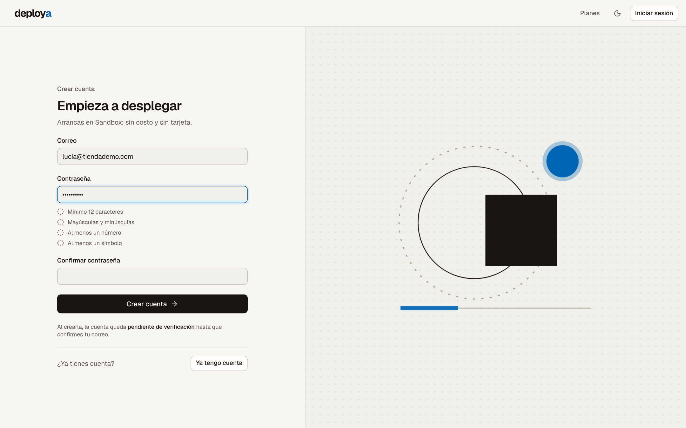
La contraseña debe tener al menos 12 caracteres, mayúsculas y minúsculas, un número y un símbolo.
Verificar tu correo
Al crear la cuenta queda Pendiente de verificación y te enviamos un correo con un botón (y el enlace en texto, por si el botón no funciona).
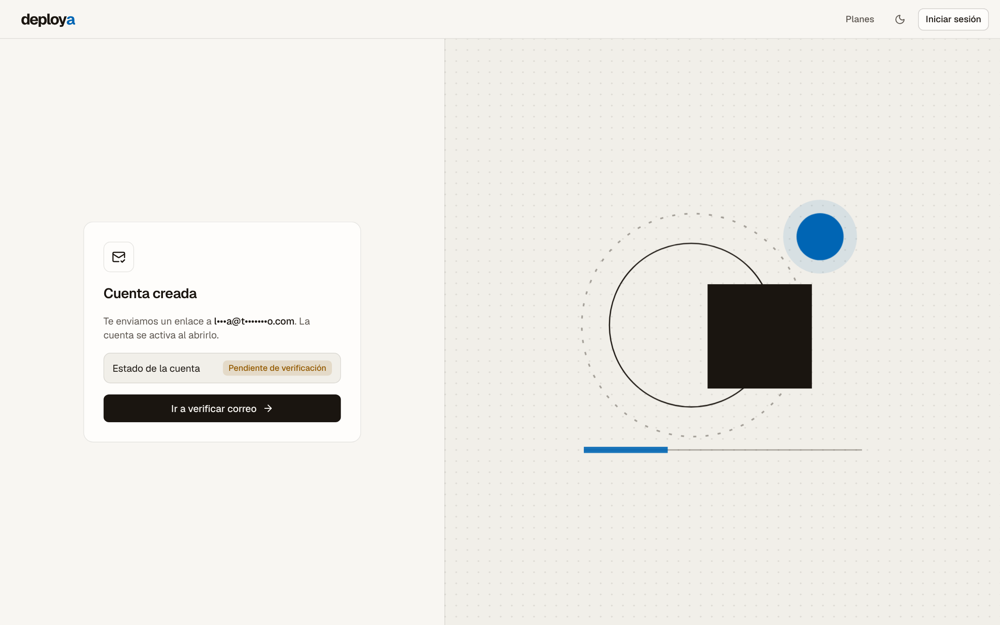
Abre el enlace y tu cuenta pasa a Activa.
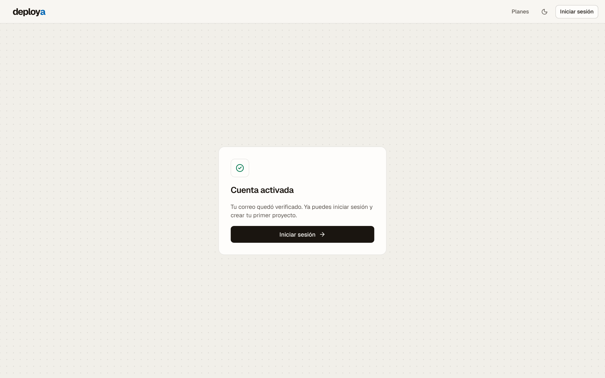
| Si… | Qué pasa |
|---|---|
| No te llegó el correo | Revisa spam y pide otro desde la misma pantalla (puedes hacerlo cada 60 segundos) |
| El enlace venció | Vale 24 horas y una sola vez. Pide otro: el anterior deja de servir |
Iniciar sesión
Escribe tu correo y tu contraseña en Iniciar sesión.
Si algo no coincide, Deploya no te dice cuál de los dos datos falló, para no revelar qué correos tienen cuenta.
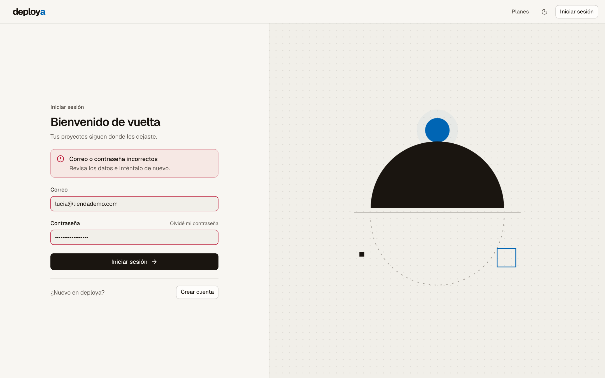
| Mensaje | Qué significa y qué hacer |
|---|---|
| Correo o contraseña incorrectos | Revisa ambos; si no recuerdas la contraseña, usa Olvidé mi contraseña |
| Cuenta sin verificar | Abre el enlace del correo o pide uno nuevo |
| Cuenta suspendida por administración | Un administrador la suspendió y te muestra el motivo. Escribe a soporte |
| Sesión expirada | Pasaron 7 días sin actividad: vuelve a iniciar sesión |
Recuperar tu contraseña
- En Iniciar sesión, elige Olvidé mi contraseña.
- Escribe tu correo y envía.
- Abre el enlace del correo y elige una contraseña nueva.
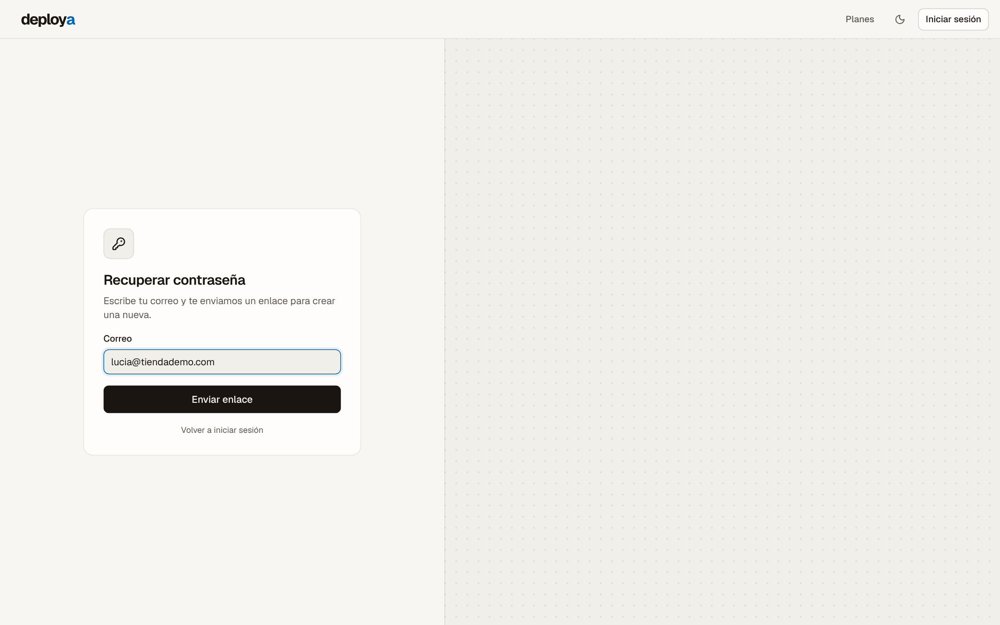
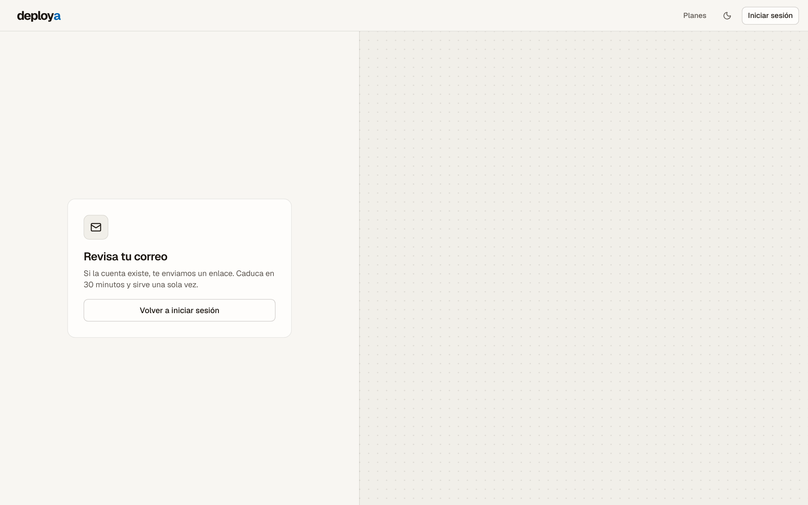
Planes y pagos
Ver los planes
En Suscripción → Planes comparas los cuatro planes. Alterna entre 30 días y 365 días para ver el precio de cada vigencia.
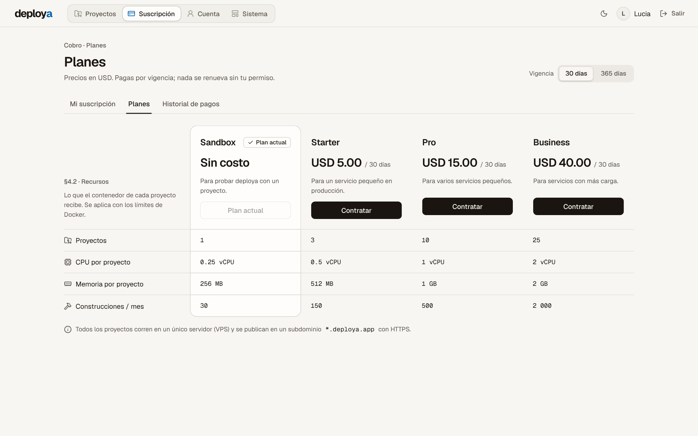
| Plan | Precio | Proyectos | CPU / proyecto | Memoria / proyecto | Construcciones / mes | Bases de datos | Disco por base |
|---|---|---|---|---|---|---|---|
| Sandbox | Sin costo | 1 | 0.25 vCPU | 256 MB | 30 | 1 | 512 MB |
| Starter | USD 5.00 / 30 días | 3 | 0.5 vCPU | 512 MB | 150 | 3 | 2 GB |
| Pro | USD 15.00 / 30 días | 10 | 1 vCPU | 1 GB | 500 | 10 | 10 GB |
| Business | USD 40.00 / 30 días | 25 | 2 vCPU | 2 GB | 2 000 | 25 | 25 GB |
Contratar un plan
- En el plan que quieres, pulsa Contratar.
- Revisa el resumen: plan, vigencia, fechas y total.
- Escribe los datos de la tarjeta y pulsa Confirmar pago.
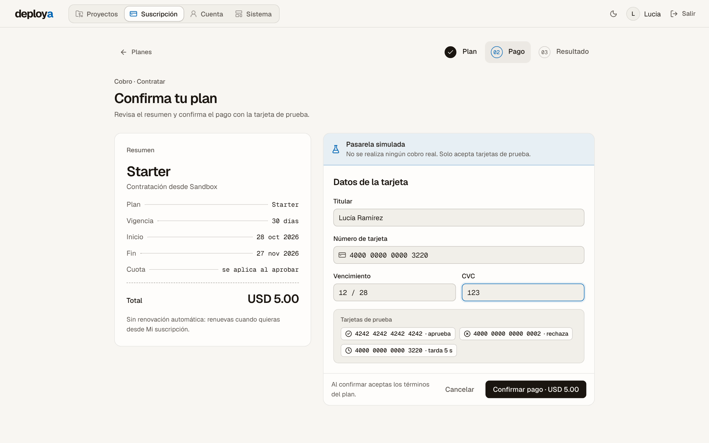
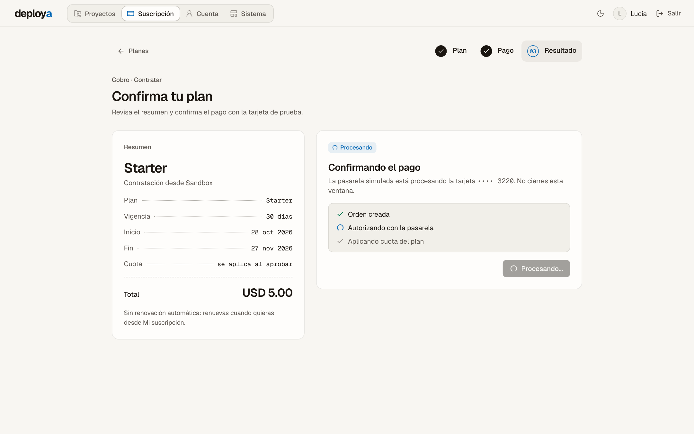
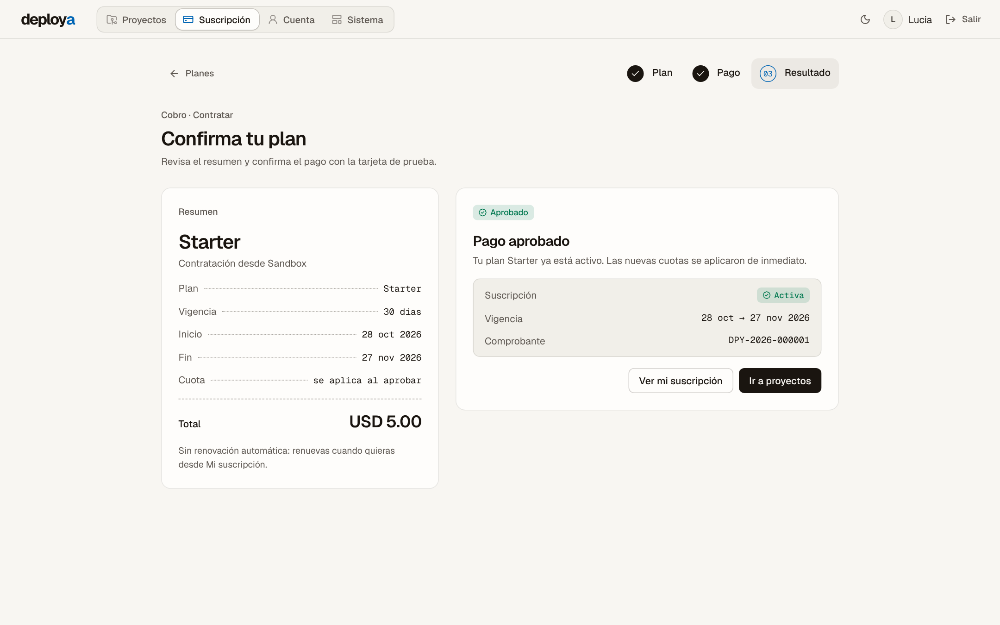
Si el pago se rechaza, tu plan no cambia y puedes intentar con otra tarjeta.
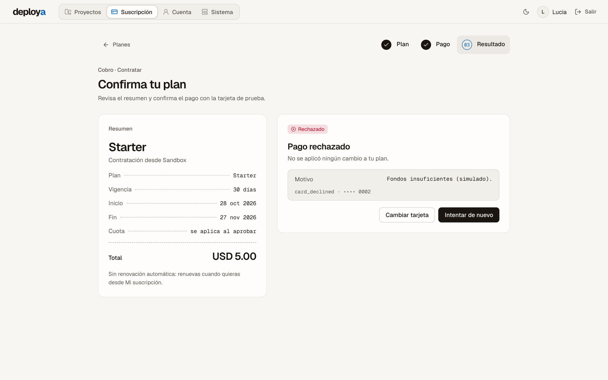
Mi suscripción
En Suscripción → Mi suscripción ves tu plan, su estado, los días que quedan, el consumo del mes y el ritmo de tus construcciones.
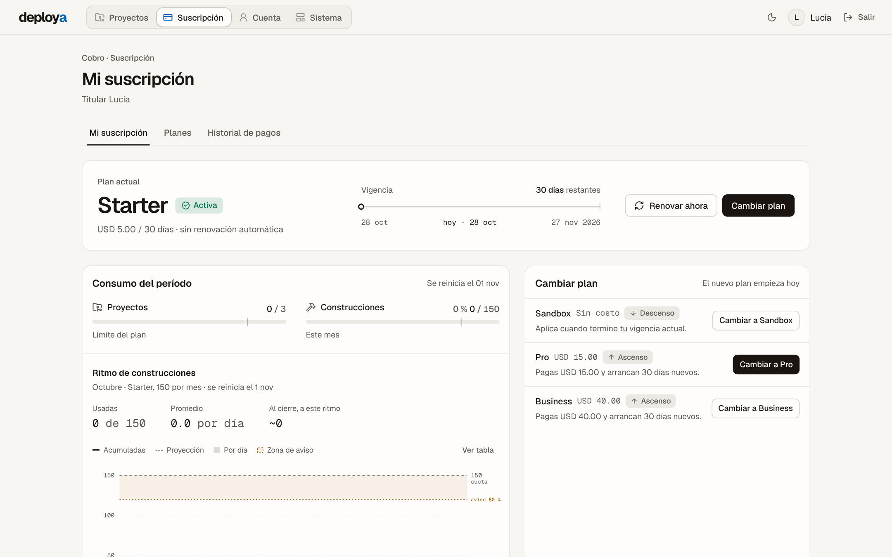
| Acción | Qué hace |
|---|---|
| Renovar ahora | Paga el plan actual y suma la vigencia al final de la que tienes |
| Cambiar a un plan mayor | Pagas el plan completo y arrancan 30 (o 365) días nuevos desde hoy |
| Cambiar a un plan menor | No se cobra: el cambio se aplica cuando termina tu vigencia actual |
El ciclo de tu suscripción
| Estado | Cuándo | Qué pasa con tus apps |
|---|---|---|
| Activa | Vigencia en curso | Todo funciona |
| Por vencer | Faltan 7 días o menos | Funciona; te avisamos por correo |
| Vencida | Pasó la fecha | Siguen en línea 5 días, pero no puedes desplegar ni crear proyectos |
| Suspendida | Terminaron los 5 días | Tus contenedores se detienen; tus datos se conservan |
| Cancelada | 30 días suspendida | La suscripción se cierra |
Si renuevas una suscripción Vencida o Suspendida, vuelve a Activa y tus apps arrancan solas.
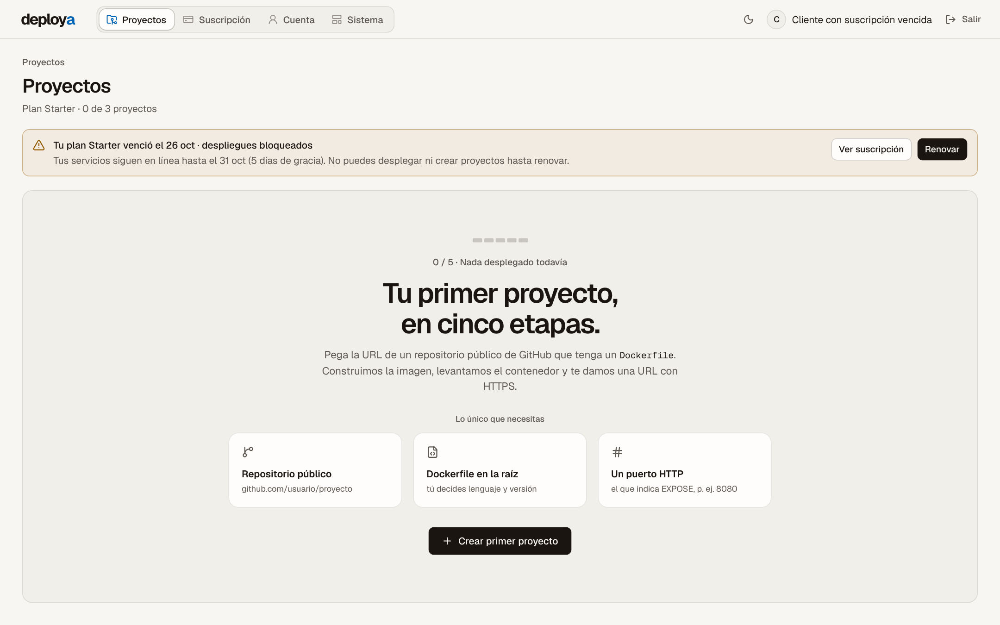
Historial de pagos y comprobantes
En Suscripción → Historial de pagos ves cada intento de pago, aprobado o rechazado. Los aprobados tienen comprobante: ábrelo con Ver comprobante y descárgalo en PDF.
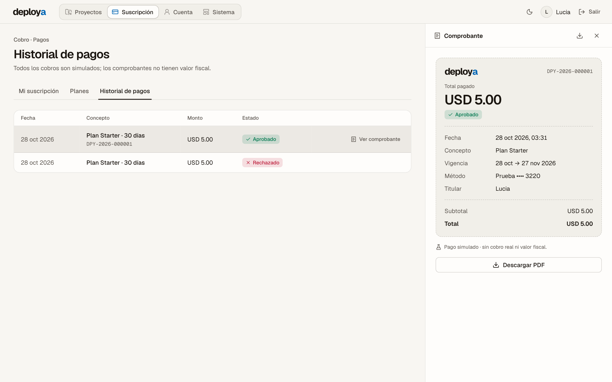
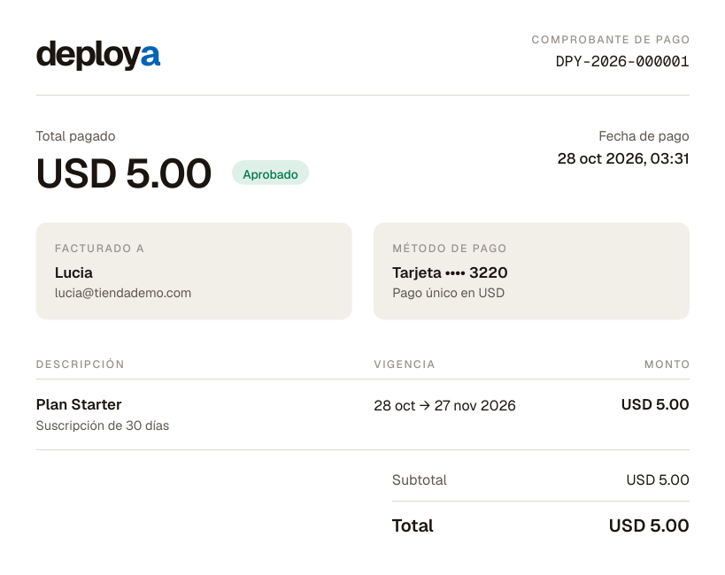
Crear tu primer proyecto
La lista de proyectos
Sin proyectos, Deploya te muestra qué necesitas. Con proyectos, verás cada uno con el estado de su último despliegue y cuántos llevas frente al límite de tu plan.
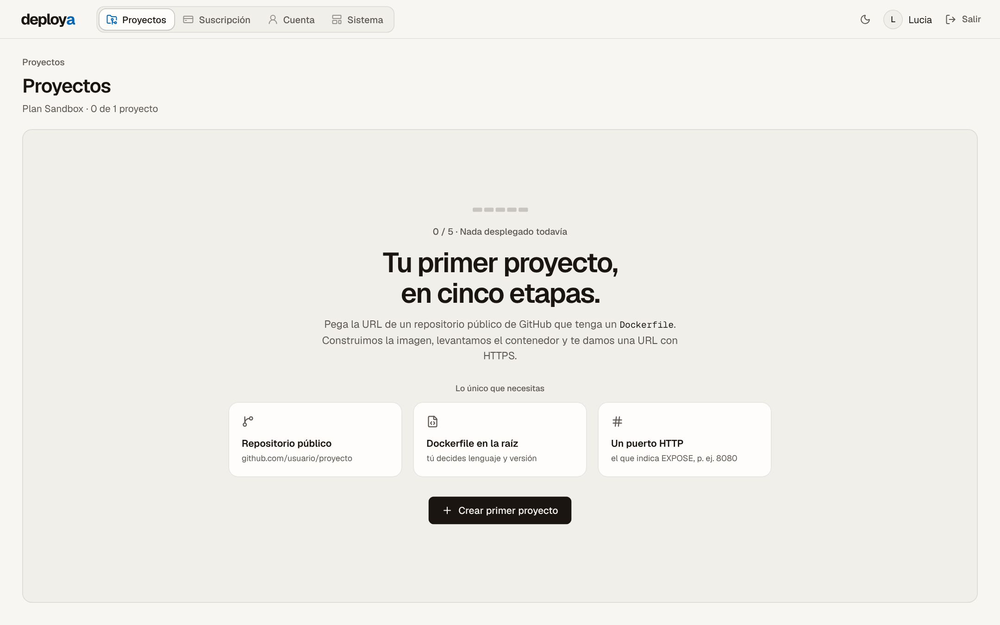
Paso 1 · Repositorio
- Pulsa Nuevo proyecto (o Crear primer proyecto).
- Pega la URL de tu repositorio de GitHub y escribe la rama.
- Pulsa Continuar. Deploya revisa el repositorio, lee el último commit y busca cómo construirlo.
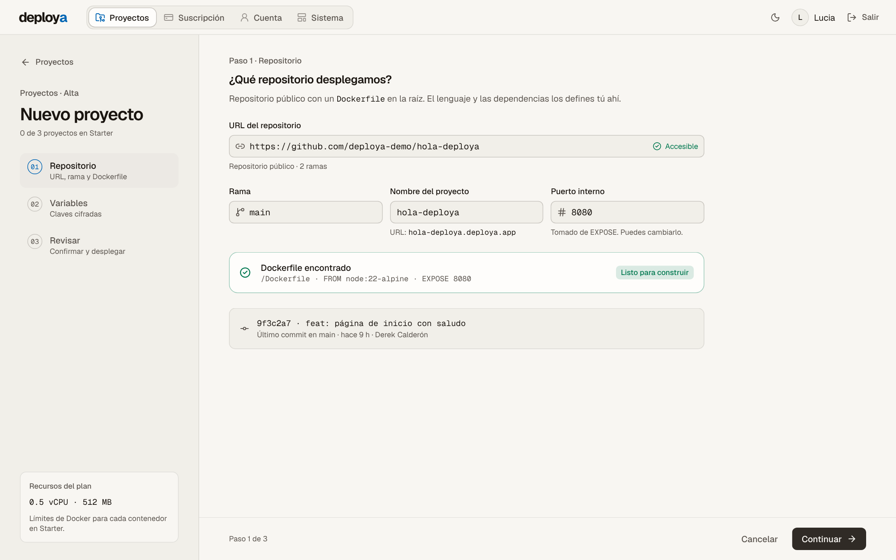
- El nombre define tu dirección:
hola-deploya→hola-deploya.deploya.larasolutions.dev. No cambia aunque después renombres el proyecto. - El puerto sale del
EXPOSEde tuDockerfile. Puedes cambiarlo. - Si tu
Dockerfileno está en la raíz (por ejemplo,apps/api/Dockerfileen un monorepo), escribe su ruta en el mismo paso. Deploya comprueba que exista en la rama.
¿Sin Dockerfile? Si tu repositorio es Node (con un script start), Python (requirements.txt o pyproject.toml con main.py o app.py), Go (go.mod) o un sitio estático (index.html), Deploya lo reconoce y lo construye con su propia receta. Tu app debe escuchar en el puerto PORT (8080).
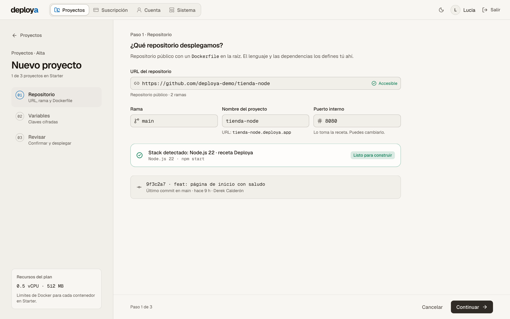
| Error | Qué hacer |
|---|---|
| No pudimos acceder al repositorio | Revisa la URL y que el repositorio sea público |
Falta el Dockerfile y no se reconoce el stack | Agrega un Dockerfile en la raíz (la pantalla trae un ejemplo) |
| La rama no existe | Elige una de las ramas que lista Deploya |
| GitHub no disponible | Es temporal: vuelve a intentar en unos minutos |
| Llegaste al límite de proyectos | Elimina uno o cambia a un plan mayor |
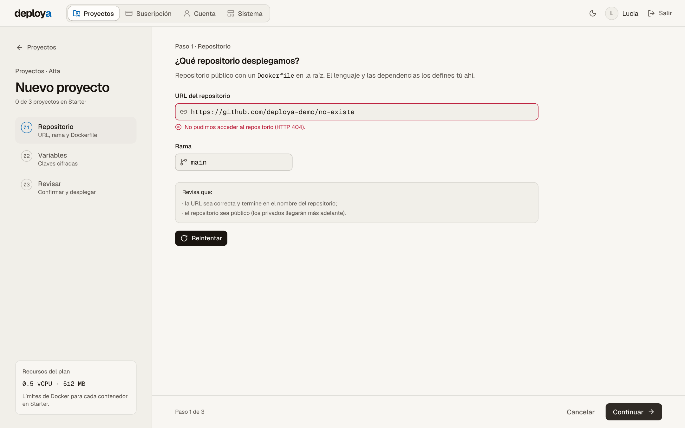
Paso 2 · Variables de entorno
Agrega las claves que tu app necesita (contraseñas, tokens, configuración). Este paso es opcional.
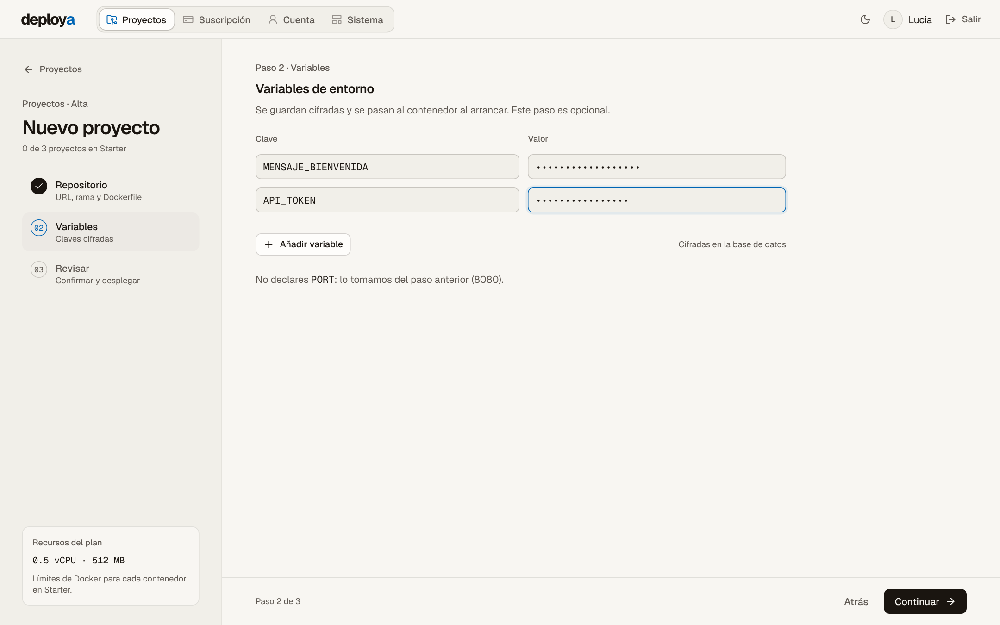
- Las claves van en
MAYUSCULAS_Y_GUIONES_BAJOS. - No declares
PORT: Deploya la pone con el puerto del paso anterior. - ¿Ya tienes un archivo
.env? Usa Pegar .env y Deploya separa cada línea en clave y valor. Caben hasta 150 variables por proyecto. - Los valores se guardan cifrados y nunca aparecen en las bitácoras.
Paso 3 · Revisar y desplegar
Revisa todo y pulsa Desplegar. Empieza el despliegue #1.
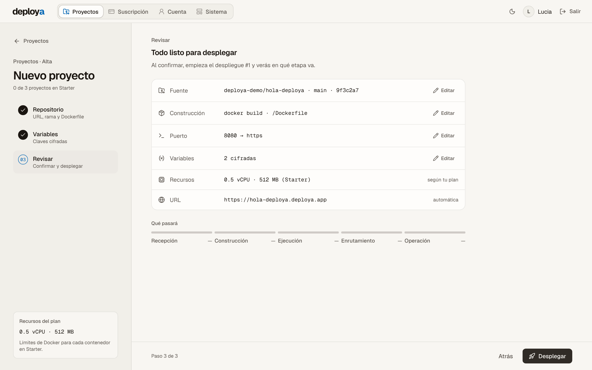
Desplegar y seguir un despliegue
Las cinco etapas
Cada despliegue pasa por cinco etapas. La pantalla las muestra con su duración y una bitácora que se actualiza cada 3 segundos.
| Etapa | Qué hace Deploya |
|---|---|
| Recepción | Clona tu rama, registra el commit y detecta cómo construir |
| Construcción | Construye la imagen con tu Dockerfile o con la receta (máximo 10 minutos) |
| Ejecución | Arranca el contenedor con la CPU y la memoria de tu plan y verifica que responda |
| Enrutamiento | Publica tu dirección con HTTPS; la versión anterior sigue sirviendo hasta este momento |
| Operación | El despliegue queda Saludable y es la versión activa |
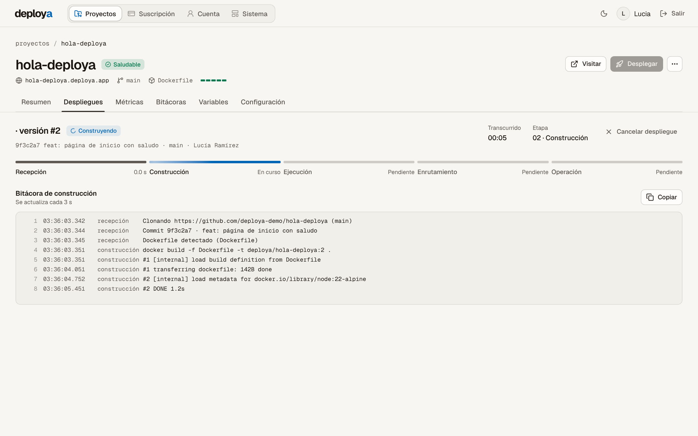
Cuando termina, verás Saludable, la dirección pública, la imagen y la bitácora completa. Con Copiar te llevas la bitácora.
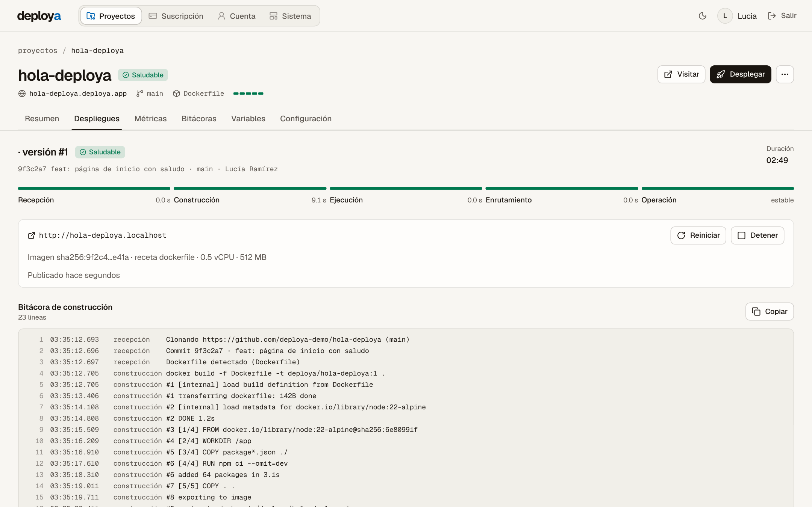
Mientras un despliegue está en Encolado o Construyendo puedes cancelarlo.
Operar tu proyecto
Al abrir un proyecto ves seis pestañas.
Resumen
Estado actual, URL pública, versión activa, imagen, recursos aplicados, el último despliegue paso a paso y el uso de las últimas 24 horas.
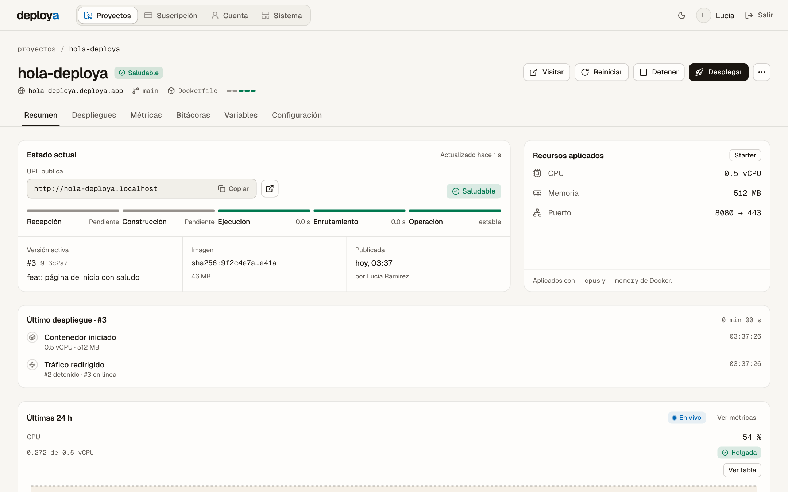
Botones de arriba: Visitar abre tu app; Reiniciar la vuelve a arrancar sin reconstruir; Detener la apaga; Desplegar construye el último commit de tu rama.
Despliegues y reversión
El historial lista cada versión con su commit, fecha, duración, estado e imagen. Arriba, la gráfica Tiempo por etapa muestra cuánto tarda cada etapa y la mediana.
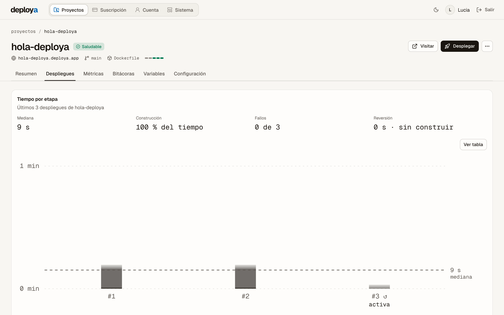
Por cada fila puedes:
| Acción | Qué hace | ¿Consume construcciones? |
|---|---|---|
| Revertir | Vuelve a esa versión usando la imagen ya construida. Tarda segundos | No |
| Redesplegar | Vuelve a construir ese commit desde cero | Sí |
| Reintentar (en un Fallido) | Repite el despliegue del mismo commit | Sí |
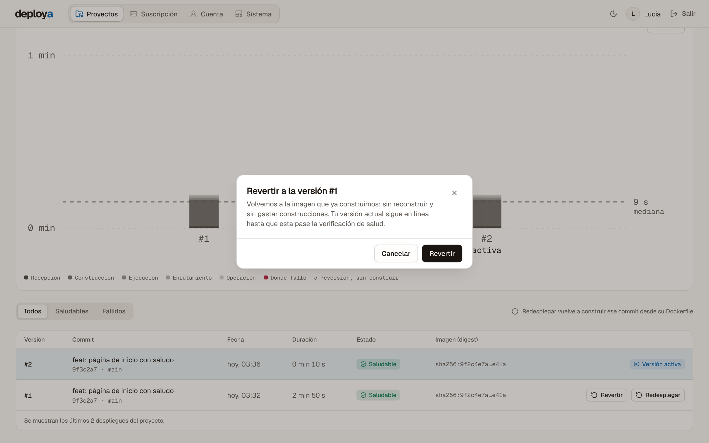
La reversión crea un despliegue nuevo en estado Revirtiendo, salta Recepción y Construcción y queda Saludable en segundos. Se conservan las 5 versiones más recientes de cada proyecto para revertir.
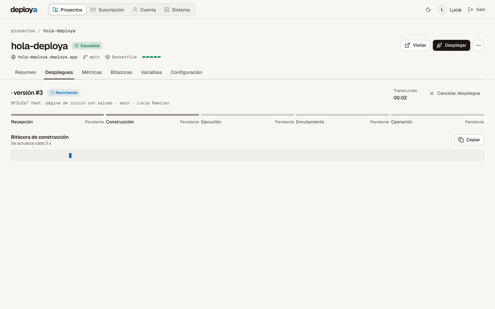
Métricas
CPU y memoria de tu contenedor en la última hora o en las últimas 24 h, frente al límite de tu plan. Desde el 80 % la gráfica marca la zona de aviso, y cada despliegue aparece como un evento. Ver tabla muestra los mismos datos en una tabla.
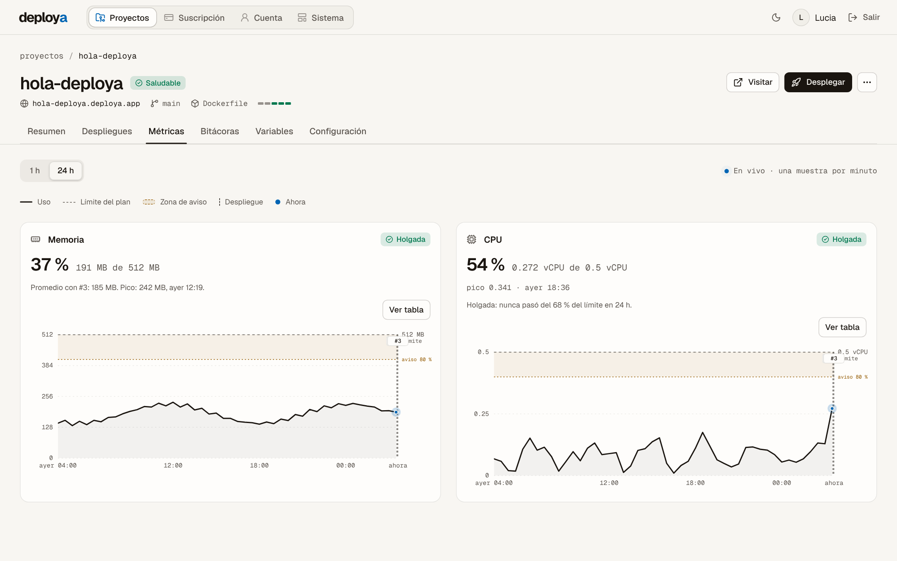
Bitácoras
La salida de tu aplicación en vivo (últimas 500 líneas), con filtro por nivel, búsqueda, pausa y descarga. Deploya no guarda estas líneas: las lee de tu contenedor.
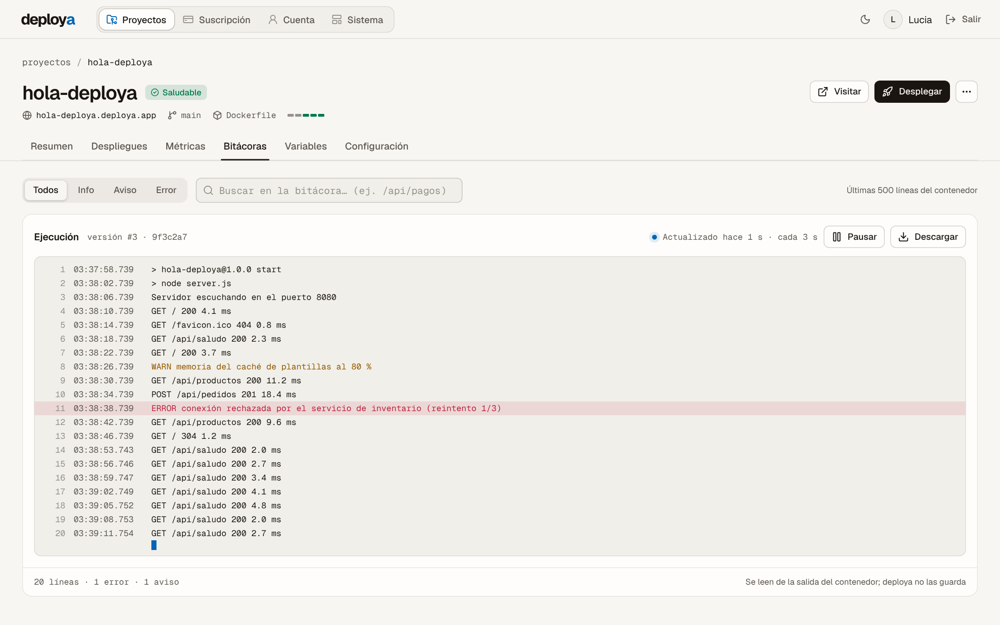
Variables
Agrega, edita o borra variables. Mostrar revela un valor solo a ti. Puedes Guardar (aplica en el próximo despliegue) o Guardar y desplegar.
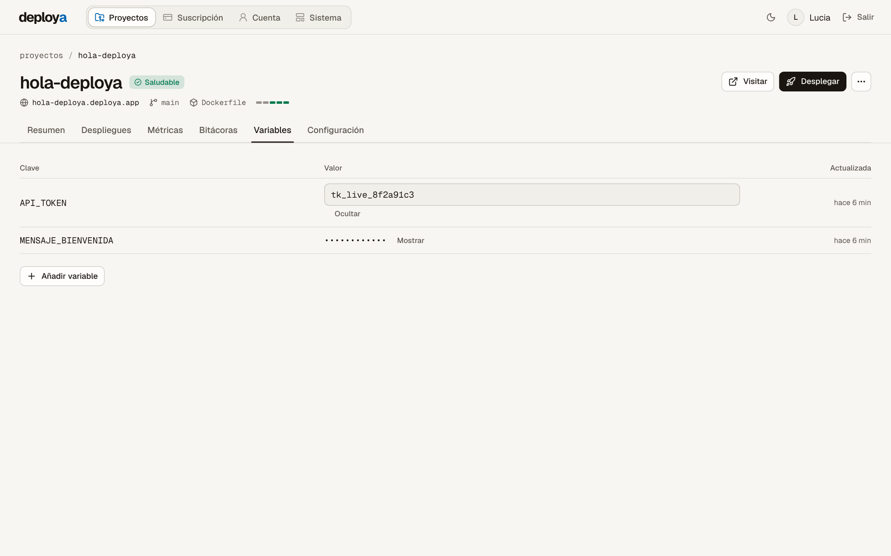
Configuración y eliminación
Cambia el nombre, el repositorio, la rama, la ruta del Dockerfile o el puerto. Los cambios aplican en el próximo despliegue; guardar no despliega.
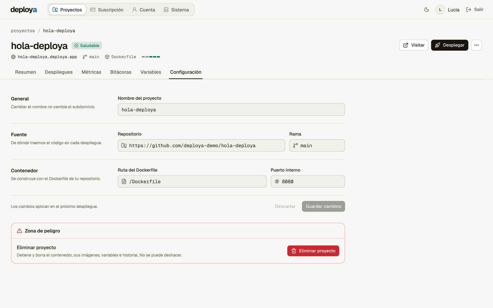
Para eliminar el proyecto, escribe su nombre y confirma. Se borran el contenedor, las imágenes, las variables y el historial, y se libera el cupo de tu plan.
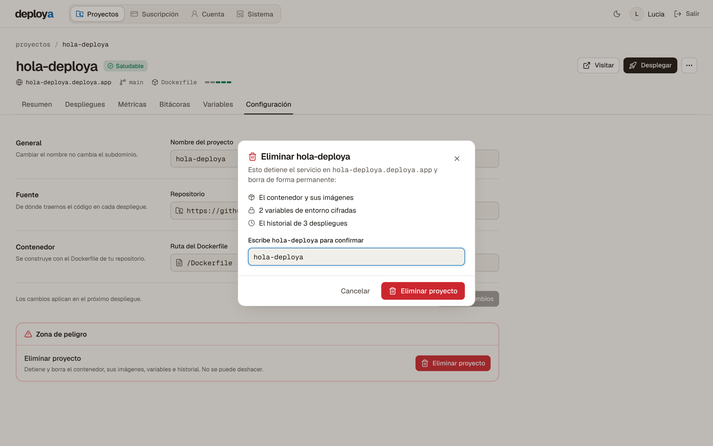
En Configuración también está el comando de inicio: reemplaza el que trae la imagen, por ejemplo node dist/worker.main.js para correr un trabajador con la misma imagen que tu API. Déjalo vacío para usar el de la imagen.
Bases de datos y almacenamiento
La pestaña Datos del proyecto agrega bases administradas por Deploya. Sus datos viven en un volumen propio: sobreviven a redespliegues, reversiones y reinicios de tu app.
| Tipo | Para qué | Variables que recibe tu app |
|---|---|---|
| PostgreSQL 17 + pgvector | Base relacional con búsqueda vectorial | DATABASE_URL y PG* |
| Redis 7 | Caché y colas, con persistencia en disco | REDIS_URL |
| Almacenamiento S3 | Archivos con URL pública, compatible con S3 | S3_ENDPOINT, S3_PUBLIC_ENDPOINT, S3_BUCKET y sus claves |
- Abre tu proyecto y entra en Datos. Arriba ves cuántas bases usas de las que permite tu plan.
- Pulsa Agregar en el tipo que necesitas. El recurso pasa de Creando a Disponible en unos segundos.
- Despliega tu proyecto: las variables de conexión se inyectan en el siguiente despliegue. Si ya definiste una variable con el mismo nombre, se respeta la tuya.
- Con Ver conexión copias los valores reales, por ejemplo para conectarte desde tu computadora con un túnel o para migrar datos.
Compartir. Si tu sistema son varios proyectos (una API y sus trabajadores), crea la base en uno y pulsa Compartir con otro proyecto: solo aparecen tus propios proyectos, y cada proyecto puede tener una base de cada tipo.
El disco de cada base se mide y se muestra. Cerca del límite de tu plan te avisamos, pero no cortamos el servicio. Para eliminar una base escribe su tipo (postgres, redis o s3): sus datos se pierden para siempre. Si la base era compartida contigo, eliminarla desde tu proyecto solo la desconecta.
La lista con varios proyectos
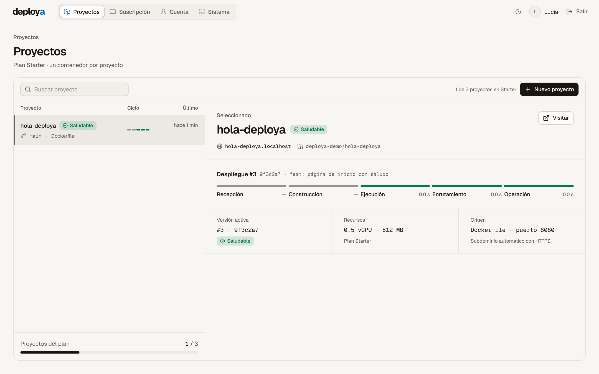
Tu cuenta
En Cuenta cambias tu nombre (hasta 64 caracteres). El correo y el rol se muestran pero no se editan.
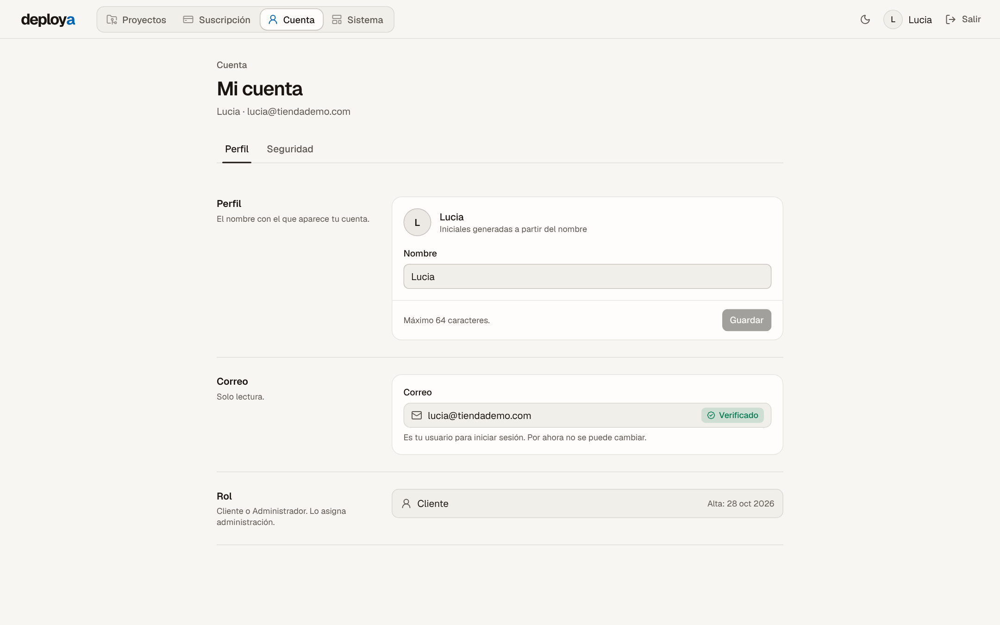
En Cuenta → Seguridad cambias tu contraseña (pide la actual; cierra tus otras sesiones) o cierras sesión en todos los dispositivos.
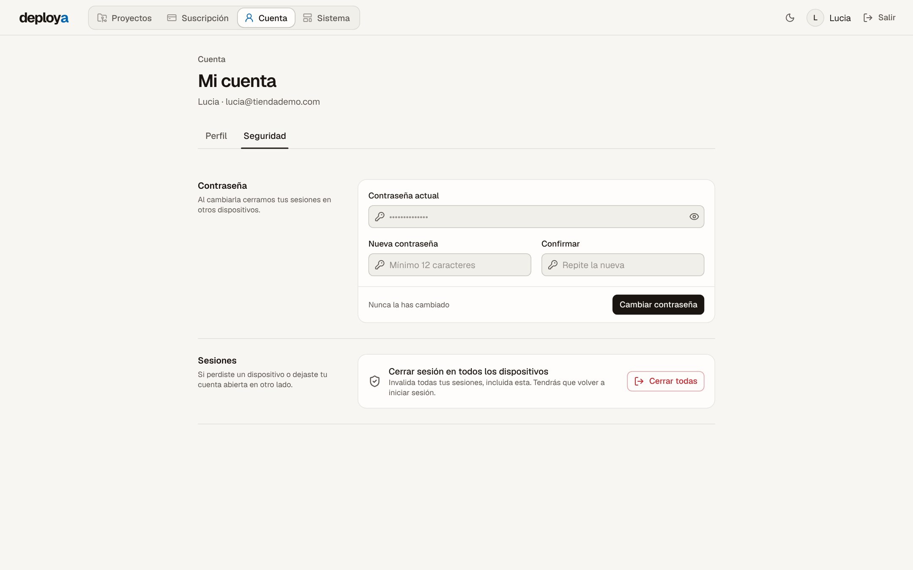
Administración
Esta parte solo la ve una cuenta con rol Administrador.
Usuarios
Administración lista todas las cuentas. Busca por correo, filtra por estado de suscripción y abre una cuenta para ver su suscripción, sus proyectos con su estado y sus pagos.
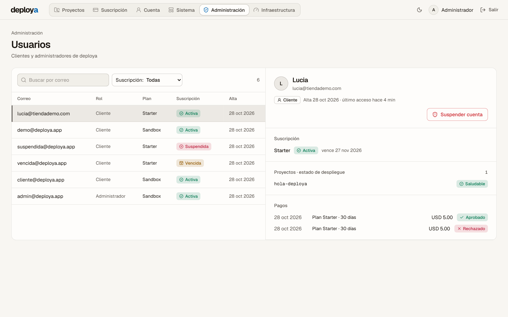
Suspender y reactivar una cuenta
- Abre la cuenta y pulsa Suspender cuenta.
- Elige un motivo de la lista y escribe un detalle para el registro.
- Confirma.
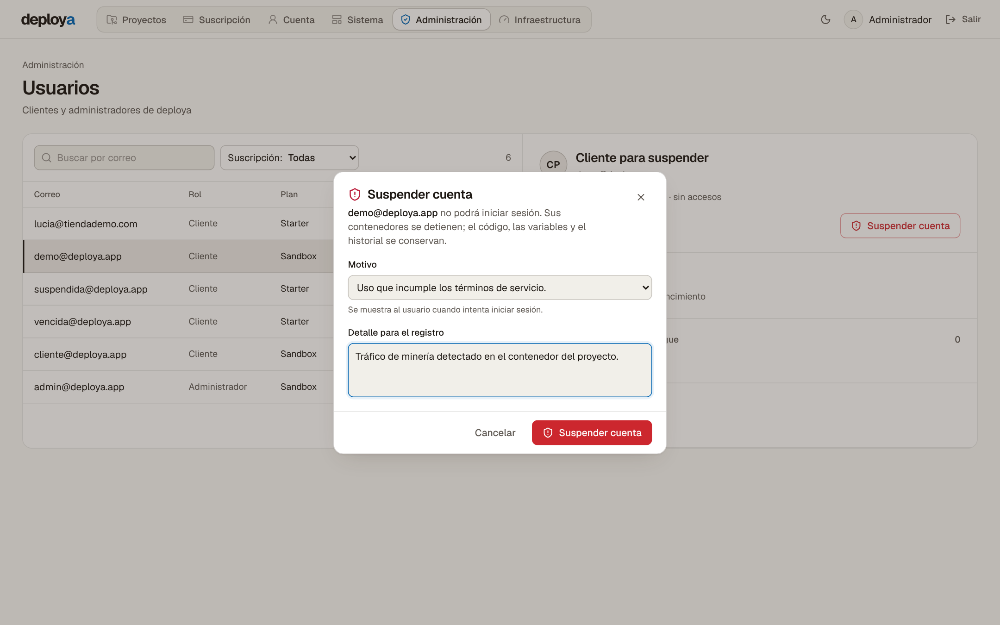
La cuenta no podrá iniciar sesión, sus contenedores se detienen y sus datos se conservan. La acción queda registrada con quién, cuándo y por qué. No se puede suspender a otro administrador.
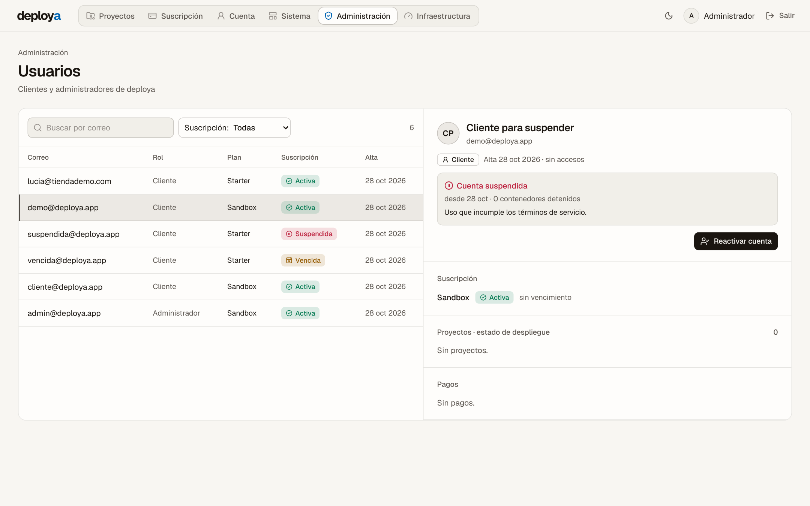
El usuario ve el motivo al intentar entrar:
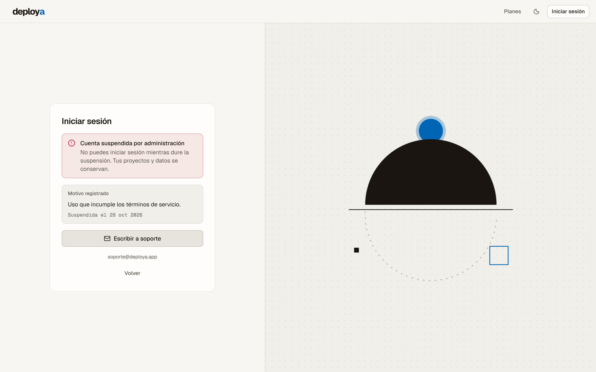
Para deshacerlo, pulsa Reactivar cuenta y escribe un detalle. Sus contenedores vuelven a arrancar si su suscripción está vigente.
Infraestructura
Vista de solo lectura del servidor: CPU, memoria y disco del nodo, la cola de construcción (en espera, en curso, fallidas en 24 h) y la última muestra de cada entorno.
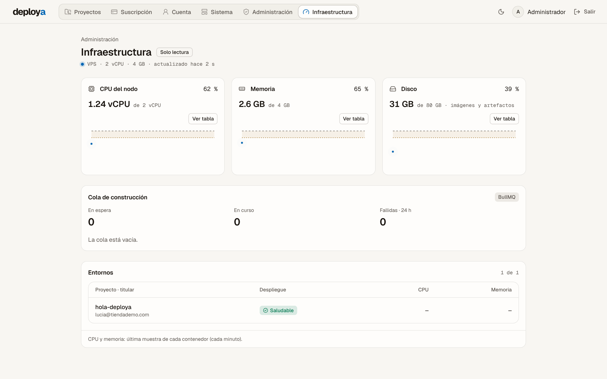
Preguntas frecuentes
| Pregunta | Respuesta |
|---|---|
| ¿Me cobran dinero real? | No. Los pagos son simulados y el comprobante lo dice |
| ¿Mi app se cae si un despliegue falla? | No. La versión anterior sigue en línea hasta que una nueva pasa la verificación de salud |
| ¿Revertir gasta construcciones? | No. Redesplegar sí, porque vuelve a construir |
| ¿Cuántas versiones puedo revertir? | Las 5 más recientes de cada proyecto |
| ¿Puedo usar un repositorio privado? | No por ahora: solo repositorios públicos de GitHub |
| ¿Puedo usar mi propio dominio? | No por ahora: cada proyecto recibe <nombre>.deploya.larasolutions.dev con HTTPS |
| ¿Qué pasa con mis datos si mi suscripción se suspende? | Se conservan. Al renovar, tus apps vuelven a arrancar |
| ¿Por qué mi app no pasa la salud? | Debe responder HTTP en el puerto configurado (o en PORT) dentro de 60 segundos |
| ¿Necesito contratar una base de datos aparte? | No. Agrégala en la pestaña Datos; cuántas puedes tener depende de tu plan |
| ¿Mis datos se pierden si redespliego o revierto? | No. Las bases viven en su propio volumen; solo se borran si eliminas la base o el proyecto dueño |
| ¿Puedo instalar Deploya en mi servidor? | Sí: es de código abierto (AGPL-3.0). Mira el capítulo Modo autoalojado del manual técnico |